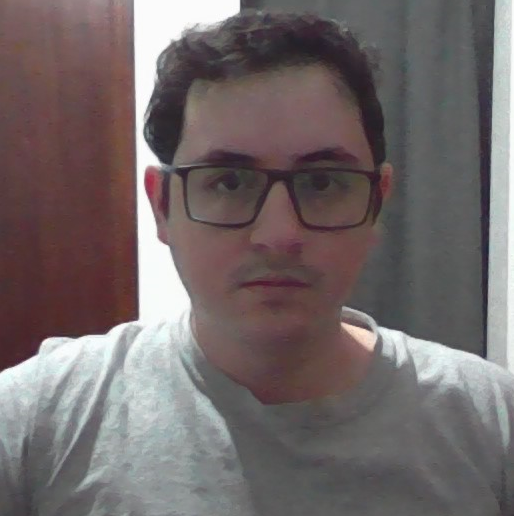

Gerardo Jimenez

Contact
Hobbies
Web developer (in the making)
Career Objective
Systems engineer who seeks to hone his skills in web development through daily practice
until reaching his dream job of becoming a full stack web developer.
Education
- Bachelor's degree in computer systems engineering
- CS50 completed
- Complete python course (udemy)
Experience
- 4 years practicing and programming for myself
- 6 months working for a company as a programmer to complete my social service
Skills
- Communication
- Creativity
- Critical thinking